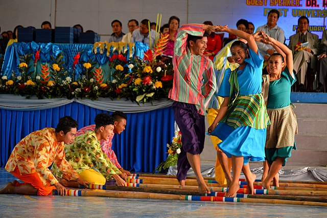

Overview
The Philippines is known for its vibrant fiestas and colorful festivals that reflect the nation’s faith, joy, and community spirit. Each celebration bursts with lively parades, traditional costumes, street dancing, and music — honoring patron saints, history, or harvest. These events unite towns and cities across the country in a grand showcase of culture, devotion, and Filipino pride.
Top Music & Dance in the Philippines

What is Takik?
The Takik is a Bontoc courtship dance performed by a man and a woman. At least 5 other male dancers accompany them, providing the music and rhythm for the dance. They line up, starting with the head gong-player, behind the male dancer.
Key Elements
The Takik Dance follows a steady, hypnotic tribal rhythm created by the beating of gongs and drums. The tempo gradually builds energy, symbolizing the unity and pulse of the Cordillera community. The rhythmic sound of the gangsa sets the pace, guiding dancers in perfect synchronization.
The dance features strong, grounded movements — rhythmic stomping, hopping, and swinging of the arms while circling the center. Dancers often mimic the movements of warriors or hunters, expressing strength, courage, and celebration. Each step flows naturally with the beat, connecting the dancers to the earth beneath their feet.
The main instruments used are the gangsa (flat bronze gongs) and tribal drums. The gangsa produces a deep, metallic tone that drives the rhythm of the dance, while the drums add depth and intensity. When played together, they create a vibrant soundscape that fills the air and amplifies the festive spirit of the Igorot community.

What is Tinkling?
Tinikling is one of the most iconic traditional dances of the Philippines, originating from Leyte. The dance imitates the swift and graceful movements of the tikling birds as they dodge bamboo traps set by farmers. Dancers move elegantly between the striking bamboo poles, showcasing coordination, rhythm, and teamwork. It’s often performed at cultural events and festivals, representing the Filipino’s agility, creativity, and joyful spirit.
Key Elements
Tinikling follows a bright, lively 3/4 rhythm that echoes the joy and playfulness of Filipino celebrations. The sound of bamboo poles clapping together creates a percussive beat, synchronized with the lively melodies of rondalla instruments such as guitars, bandurrias, and octavinas. The rhythm starts gently but grows faster, challenging the dancers’ timing and coordination.
Performers gracefully hop, skip, and glide between two clapping bamboo poles. Their movements mimic the quick, light-footed motion of tikling birds avoiding traps. Each step demands focus, agility, and balance, requiring dancers to move in harmony with the beat and their partners. The smooth transitions between hops and jumps highlight the dance’s elegance and excitement.
Tinikling uses bamboo poles struck together in rhythmic patterns to form the percussive base of the music. These are often accompanied by rondalla ensembles playing string instruments like the guitar, bandurria, and laud, which add melodic layers. The combination of bamboo percussion and string music gives Tinikling its signature lively and joyful atmosphere.
 Culture & History
Culture & History